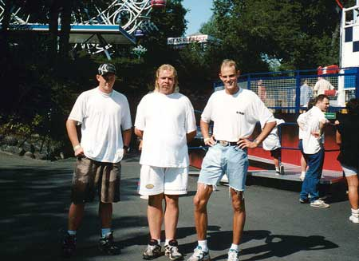
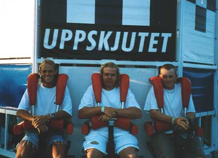

Me and my friends going to Liesberg in 1996
|
There
was not as many of us in the summer of -96, but no less fun. The weather was
(as you can see) a lot warmer and nicer. It was perfect, and we did not have
stand in line to the attractions either.  |